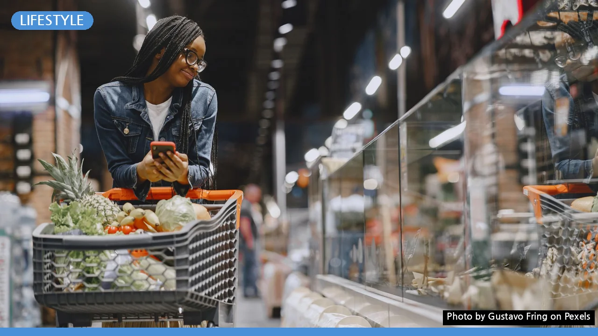
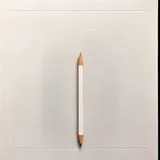

장보기 전 필수 체크! 식비 20% 아끼는 똑똑한 쇼핑 가이드
사진: Gustavo Fring / Pexels (무료 이미지, 출처 표기)
매번 예상 밖 지출에 놀라시나요? 식비 절약의 첫걸음
매번 장을 보고 나면 예상보다 많은 식비에 놀라곤 하시나요? 무작정 마트로 향하기 전에 이 글에서 알려드리는 몇 가지 팁만 따라 해도 식비를 20% 이상 줄일 수 있습니다. 충동구매를 막고 필요한 것만 현명하게 구매하는 습관은 생각보다 쉽습니다. 지금부터 생활비를 아껴주는 실용적인 장보기 가이드를 함께 살펴보겠습니다.
장보기 전 필수 체크리스트 5가지: 이것만 지켜도 성공
성공적인 장보기는 마트 문을 열기 전부터 시작됩니다. 다음 5가지 체크리스트를 활용하여 불필요한 지출을 줄이고 효율적인 쇼핑을 경험해 보세요.
- 냉장고 및 식료품 재고 확인: 지금 냉장고와 팬트리(pantry)에 어떤 재료가 남아있는지 먼저 확인하세요. 이미 있는 재료를 활용한 식단을 계획하면 중복 구매를 막을 수 있습니다. 특히 곧 유통기한이 다가오는 식품은 먼저 소비할 수 있도록 식단에 반영하는 것이 좋습니다.
- 주간 식단 계획 세우기: 앞으로 일주일간 무엇을 먹을지 미리 정하면 필요한 식재료가 명확해집니다. 식단을 짜면서 고기, 채소, 해산물 등 주요 재료를 균형 있게 구성하고, 한 가지 재료로 여러 요리를 만들 수 있는 방법을 고민해 보세요.
- 장보기 목록 작성 및 예산 설정: 식단 계획을 바탕으로 구체적인 장보기 목록을 작성합니다. 이때 예상 금액까지 함께 적어보는 것이 좋습니다. 목록에 없는 품목은 구매하지 않겠다는 원칙을 세우면 충동구매를 효과적으로 예방할 수 있습니다.
- 할인 정보 및 전단지 확인: 방문할 마트의 주간 할인 전단지나 앱 프로모션 정보를 미리 확인합니다. 특정 품목이 대폭 할인 중이라면 식단 계획을 유연하게 조정하여 더 큰 절약 효과를 얻을 수 있습니다. 1+1, 묶음 할인 등 다양한 혜택을 놓치지 마세요.
- 대체 재료 활용 계획: 만약 원하는 재료가 없거나 너무 비쌀 경우를 대비해 대체 가능한 재료를 미리 생각해두세요. 예를 들어, 특정 채소가 비싸다면 비슷한 맛이나 식감을 가진 다른 채소를 활용하는 식입니다. 유연한 사고방식은 예기치 않은 상황에서도 현명한 선택을 돕습니다.
- 빈 배로 가지 않기: 배가 고픈 상태로 장을 보면 먹고 싶은 충동이 강해져 계획에 없던 간식이나 조리식품을 많이 구매하게 됩니다. 장보기 전에 간단하게 요기하는 것이 좋습니다.
- 동선 효율적으로 활용하기: 신선식품(육류, 해산물, 유제품)은 맨 마지막에 담아 신선도를 유지하는 것이 중요합니다. 무겁고 상하기 어려운 공산품부터 담고, 신선식품 코너는 가장 마지막에 방문하세요. 효율적인 동선은 쇼핑 시간 단축에도 도움이 됩니다.
- 대용량 vs. 소용량 상품: 가족 구성원 수와 소비 패턴을 고려하여 대용량과 소용량 중 어떤 것이 더 경제적인지 판단합니다. 소가족이라면 대용량 구매 후 남아서 버리게 되는 것보다 소용량 구매가 더 이득일 수 있습니다. 반대로 자주 소비하는 품목은 대용량이 유리합니다.
- PB 상품(Private Brand) 활용: 대형 마트의 자체 브랜드(PB) 상품은 일반적으로 유명 브랜드 상품보다 가격이 저렴합니다. 품질은 큰 차이가 없는 경우가 많으니, 생필품이나 자주 사용하는 식품군에서 PB 상품을 적극적으로 활용해 보세요.
- 제철 식품 구매: 제철 식품은 가장 신선하고 영양가가 높으며, 가격 또한 합리적입니다. 2026년 08월 기준, 여름 제철 채소나 과일을 구매하는 것을 고려해 보세요. 계절에 맞는 식재료를 선택하는 것은 식탁을 풍성하게 하면서도 식비를 절약하는 좋은 방법입니다.
- 친환경 장바구니 사용: 일회용 비닐봉투 대신 여러 번 쓸 수 있는 장바구니나 보온·보냉 백을 사용하는 습관을 들여보세요. 환경 보호에도 기여하고, 장바구니 비용도 절약할 수 있습니다.
- 온라인 장보기 활용: 충동구매를 자주 하는 편이라면 온라인 장보기를 활용하는 것도 좋은 방법입니다. 화면으로만 보고 필요한 품목을 선택하기 때문에 불필요한 구매를 줄일 수 있습니다. 가격 비교도 더 용이합니다.
- 영수증 확인 및 가계부 작성: 장을 본 후 영수증을 꼼꼼히 확인하고, 가계부에 기록하는 습관을 들이세요. 어디에 얼마나 지출했는지 파악하면 다음 장보기 계획을 세울 때 큰 도움이 됩니다.
똑똑한 장보기를 위한 전략: 매장 활용 팁
계획을 세웠다면, 이제 실전입니다. 마트에서 현명하게 쇼핑하는 몇 가지 팁을 소개합니다.
장보기 후 현명한 식품 보관법
식재료를 잘 사는 것만큼 중요한 것이 바로 잘 보관하는 것입니다. 올바른 보관법은 식품 낭비를 줄이고 신선도를 오래 유지하는 데 기여합니다.
정확한 식품별 보관법은 식품의약품안전처(식약처) 가이드라인이나 각 제품 포장지에 명시된 정보를 참고하는 것이 가장 좋습니다. 밀폐용기나 소분용기를 활용하면 더욱 효율적인 보관이 가능합니다.
지속 가능한 장보기 습관 만들기
한두 번의 실천으로 끝나지 않고 꾸준히 유지할 수 있는 습관을 만드는 것이 중요합니다. 다음 팁들을 참고하여 나만의 장보기 루틴을 만들어보세요.
오늘 알려드린 체크리스트와 팁을 꾸준히 실천하여 더 현명하고 효율적인 장보기 습관을 만들어보세요. 작은 변화가 모여 큰 식비 절약으로 이어질 것입니다. 정확한 할인 정보나 정책은 방문 예정인 매장의 공식 홈페이지나 해당 기관에서 다시 확인하시길 권장합니다.
🔗 이 글도 함께 보면 좋아요: 나전칠기 입문, 어디부터 시작할까? 초보자를 위한 브랜드 비교 가이드
관련 추천 상품
장바구니, 소분용기, 보온보냉백 관련 인기 상품 보러가기
이 포스팅은 쿠팡 파트너스 활동의 일환으로, 이에 따른 일정액의 수수료를 제공받습니다.
한눈에 보는 상품 목록

재사용 장바구니
환경 보호와 장바구니 비용 절약을 위해 여러 번 사용할 수 있는 튼튼한 장바구니입니다.
식품 소분용기 세트
구매한 식재료를 종류별로 나누어 보관하며 신선도를 오래 유지하고 낭비를 줄이는 데 도움을 줍니다.
보온/보냉 백
여름철 신선식품이나 냉동식품을 장시간 신선하게 집까지 운반할 수 있도록 돕는 가방입니다.